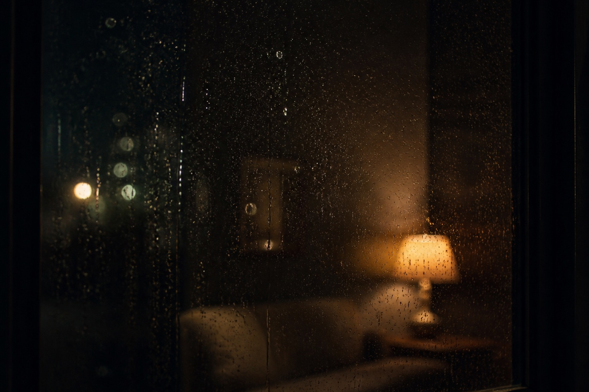

The third is an equipment blast. No badge id. The empty-subject one will not open. Server says old. If you need the meeting note, it is not in this box. It is in the Heritage Office column.

Inbox list · four letters are not one emergency